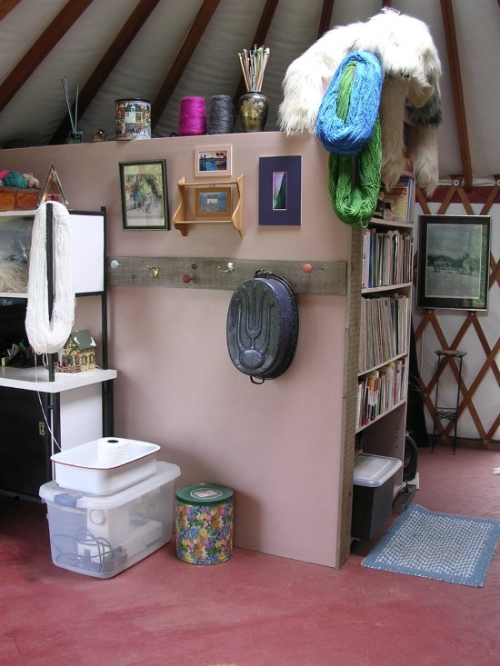

Friday, June 29, 2007
THE GIRL FROM THE FOREST
And no one can solve the secret:
Who is this girl; what's her name?
She comes in the angry ghetto-autumn
Spreading the scent of revenge, consolidation.
And like the green herald of spring
Is sensed by the grass beneath the ice -
One hears, shackled in wrath,
The salvation-melody of her stride.
Blogispondent Ian here, with the opening stanza of a song written in the Vilna Ghetto, describing the messenger girls who were the Ghetto's communication with the outside world. I recently found a very well-done documentary DVD about the abortive Jewish resistance movement in Vilna, complete with a second disc of folk songs from the period. See the complete review and discussion here on TCF.
Posted by Ian @ 02:14 PM CST [Link]
Thursday, June 28, 2007
AN OLD BIT OF KNITTERS' LORE says that if you secretly knit a strand of your own hair into the fabric, the person you give the garment to will be bound to you forever. I thought about that the other day as my needles moved through cables and lace at Cabin Sweet Cabin. It occurs to me that anyone I ever give a hand-knitted garment to will be eternally bound to four dogs. Plus any fosters that happen to be around at the moment.
If you're a cat person, you definitely don't want a sweater or a scarf from me.
Speaking of foster doggies, let's have some more good news. Remember Frosty, the terrified young cattle dog who came to me after life in a horse trailer? She was, as shelter workers described, "like a wild coyote." Totally unsocialized to people and jumpy at any new experience.
Well ... :-) :-) :-)

Frosty now has a forever home. And the phrase "lucky dog" comes to mind. Eighty acres. A full-time mom and dad (experienced cattle dog owners). It's the life, wouldn't you say?
Posted by Claire @ 04:59 PM CST [Link]
Tuesday, June 26, 2007
SO THE SUPREME COURT HAS SPOKEN in the famous Bong Hits 4 Jesus case. And -- surprise, surprise! -- Our August Justices have decided that the first amendment doesn't protect speech that could be interpreted as advocating illegal drug use.
Whoever would have imagined that the Bill of Rights was actually such a Bill of Limitations?
Posted by Claire @ 04:45 PM CST [Link]
Monday, June 25, 2007
WELL, THANK HEAVEN. Justice prevails. The Gilbert, Arizona, SWAT team has tried itself and found itself not guilty of wrongdoing.
America's Heroic Police Officers are once again free to conduct midnight raids on senior citizens, throw fire-starters onto beds, and burn down homes of people who are, after all, guilty of the heinous crime of possibly being related to somebody whose vehicle might have been used to commit robbery.
I feel so much safer now, don't you?
Posted by Claire @ 11:22 AM CST [Link]
IN HARDYVILLE we prepare to become either partners or ... gulp ... subjects of the Delaval billionaire crowd. I also yield to one of those infamous libertarian temptations and deliver a short lecture on the subject of justice. Read all about it.
Posted by Claire @ 11:14 AM CST [Link]
Sunday, June 24, 2007
THINK BEFORE YOU BUY!
Yeesh! Blogispondent Ian here, and I find myself rather flabbergasted. I just watched some battlepacks of South African .308 ammo sell, quickly, for $70 each. These are battlepacks of 140 rounds each, so these buyers are paying 50 cents/round. And for what? Generic-spec ammo (not particularly accurate), non-reloadable, FMJ, made 30 years ago, and stored in unknown conditions for all that time.
The last time I was in one of the big sporting goods stores, I noticed that they had Remington .308 on sale for $10/box. That's the exact same price as the South African is now going for. But that Remington ammo is reloadable, uses soft-point bullets (which the military would do in a heartbeat if they could), is brand new, and loaded to tighter specs than South Africa's low-bid military contractor.
So why on earth buy the surplus stuff?
My guess is that it's the word "battlepack". Folks see that word and their brain kinda switches off...if it's called "battle," it must be better, right? No! That ammo was a great buy when it was half the current cost, because you could hardly reload 308 for that money. But with today's prices, it's a waste to buy the surplus, because you can get new ammo, better in every way, for the same cost (and I won't even go into the reloading options).
Posted by Ian @ 01:45 PM CST [Link]
Saturday, June 23, 2007
DUKE WATCHERS WERE GLAD TO SEE MIKE NIFONG FALL. Yay, hooray! A prosecutor with a halo that glowed from coast to coast is discovered to be bad-egg rotten and -- boom! Out he goes on his arse. But as Slate points out, this was a "One-Off Offing" and not a sign that the justice system works against over-zealous government flunkies.
Picture a world in which every prosecutor more interested in conviction stats than in justice were bounced out of office and disbarred. By golly ... that would almost be a free world, wouldn't it? Can't have that.
(Thank you to D. McC. for the link.)
Posted by Claire @ 01:39 PM CST [Link]
WITH STATES IN FULL REBELLION AGAINST REAL ID, DC parasites politicians, including our old friend Sen. Charles Schumer are pushing once again for biometric SS cards. And with each new introduction, the idea gets a little more intrusive, a little scarier.
Sigh, if we won't let 'em in the front door, they'll sneak around the back, so determined are they to control, control, control us. The linked alert comes from DownsizeDC.org, a wonderful group whose heart is in the right place (right next to Ron Paul's heart, I'd say). But it breaks my heart to see their hopes of accomplishing so much within a system that was simply not designed for it.
Vote away its own power on such a vast scale? Show me a government that ever did ...
Posted by Claire @ 01:34 PM CST [Link]
Thursday, June 21, 2007
I WAS THINKING THIS MORNING ABOUT THE PHRASE "earning a living." Did it ever occur to you what a dismally awful expression that is? Why should anyone have to earn a living? A living just is. One might need to earn a car, a roof over one's head, honors, treats, luxuries, or respect. But earning a living? Now, that's a twisted concept. It implies we're born without even an intrinsic right to be.
I don't usually fall into the "let's dis all the Dead White Males" camp. But I'll bet you anything that phrase was concocted by some iron-rod, Protestant-ethic, servant of the British upper-crust, sneerer at the little people, advocate for the necessity for other people to labor hard from dusk to dawn. You know, for their own moral well-being and all that.
Posted by Claire @ 03:16 PM CST [Link]
Tuesday, June 19, 2007
I'm considering getting a vanity plate.
It's me, PSM. Hi.
I'm not really considering getting a vanity plate. But I was entertaining the notion enough to actually go on New Hampshire's motor vehicle website and plug in some vanity plate ideas. I was surprised at how many of my ideas were already taken, in a state with a scant million people, most of whom don't have vanity plates.
By law, the plate can only be seven characters and must include at least two letters. And it can't be obscene, or "be ethnically, racially or which a reasonable person would find offensive to good taste." (The state of New Hampshire's grammar, not mine, I swear) So while BADCOP might be available according to the database, good luck getting through the application process with it. No, the sentiment has to be a tiny bit more subtle. But that's part of the fun, now, isn't it.
[more]
Posted by Penguinsscareme @ 08:07 AM CST [Link]
Monday, June 18, 2007
WE DROVE THE FEDS OUT OF HARDY COUNTY. But to enforce our "No Trespassing" sign, we had to make a "Deal with the Devil". What will become of humble little Hardyville now that we're under the dubious protection of the Jorge Delaval organization?
A new adventure begins, and the old one continues, in the little town just west of the middle of nowhere.
Posted by Claire @ 01:43 PM CST [Link]
FOR MORE THAN 10 YEARS NOW I've been getting variations on this question. If I hear it one more time I'm going to retire to a cave in Tibet and sic rabid yetis on anyone who approaches within a mile. So here, for once and for all, are my answers.
But first, of course, The (Infamous) Question:
The country is in terrible shape. Everything we try is hopeless! I've read everything you've ever written and I think it's really great! How can we get the country back the way it was 50 (or 30 or 100 or 200) years ago? Oh, and by the way, your answer can't involve any risk, danger, or even inconvenience.
My answer: [more]
Posted by Claire @ 01:36 PM CST [Link]
Friday, June 15, 2007
INTERESTING HOW MORE AND MORE OF US are becoming willing to utter the "A" word. "A" for abolition, that is. First, the gang over at JPFO comes straight out with a move to abolish the Bureau of Alcohol, Tobacco, Firearms, and Explosives. Now J.D. Tuccille lays the same truth on the line about a more "sacred" agency, the FBI:
I wonder how often we have to play this game before we realize that the problem isn't some temporary transgression that can be fixed by shuffling personnel and tightening the rules; the problem is the FBI itself. We've created an unaccountable super-police force that accumulates authority and responsibility with each passing year. It's become a dangerous government agency--one that should be curtailed or abolished.
Sure, it's just us wingnuts saying it so far. But it's a beginning -- and a sign of the growing frustration over the futility of endless phony "reform."
Tuccille also sighs:
But I've said that before. Instead, we'll huff and puff a bit about this latest scandal, until it, too, is forgotten. And then we'll start all over again over some new outrage a couple of years down the line.
True -- for now. But eventually the frustration builds beyond that. Eventually, all the reformist fakery blows up in the faces of the folks who thought they could maintain the brutal, lawbreaking status quo forever.
Over at JPFO, they've made a conscious decision to put gun owners and Bill of Rights supporters on the offensive, for a change. What better way than to strike at the very roots of our enemies' power?
Can't reform the Devil -- or a federal agency. But I repeat myself.
Posted by Claire @ 01:30 PM CST [Link]
Wednesday, June 13, 2007
I PREDICTED A RECESSION LAST OCTOBER.
Silver here. Specifically, I used the very strong correlation between inverted yield curves and recessions to predict that one would start "within 5-10 months." It's been nearly 8 months, and according to the Bureau of Economic Analysis (BEA) the economy grew at a 0.6% rate in the first quarter of 2007. That's pretty anemic, but unless the growth is negative, it's not a recession.
Was I wrong? After all, predictions are hard, especially about the future. But I'm not ready to turn in my crystal ball just yet.
First, there's two months to go in my prediction. Second, the BEA figures are backward looking; they won't know if a recession hits us in July or August until next December.
More importantly, I think we may be in a recession already.
[more]
Posted by Silver @ 07:10 AM CST [Link]
Tuesday, June 12, 2007
A LITTLE MOLE WHISPERED THIS INTO MY EAR. The Social Security Administration is hoping -- and in the early stages of planning -- to get electronic access to the State Department's passport database. They expect to have an internal report within weeks on the feasibility of this latest snoopscheme.
Don't think that sounds like any big deal? The SSA plays a huge role in verifying our identities for employment, drivers licenses, credit, and other purposes. The more databases are linked, the more chances there are that errors will pollute our information. The more errors, the more chance we'll be denied the basic functions of life and earning a living. (And of course that's just one of a multitude of drawbacks to these One Big Database plans.)
Our Helpful Mole says, "One bad piece of information in a database anywhere and pretty soon you won't be able to do ANYTHING, and having it corrected will probably be a nightmare, too."
But remember, you should never, ever object. Because it's all to preserve Your Freedom.
(Thank you, Brave Mole.)
Posted by Claire @ 04:18 PM CST [Link]
THIS IS THE STORY OF
or
One More Way Cops Choose to Act Like Criminals
It all began last week when local cops picked up a pair of young pit bulls roaming the streets near a church day-care center. [more]
Posted by Claire @ 04:09 PM CST [Link]
Monday, June 11, 2007
IN HARDYVILLE the fed siege concludes.
And don't worry ... some of those loose threads will be tied up starting next week, in the new series, "The Deal with the Devil."
Posted by Claire @ 02:53 PM CST [Link]
I'D BE LYING IF I SAID IT WAS A GREAT MOVIE. In some ways, it barely makes it into the territory of being a good movie. But Uncivil Liberties (recommended to me by D.A. -- thanks, Dana!) is an interesting, sincere movie and one any libertarian or civil libertarian might be heartened to see. Call it also a pretty darned good amateur production; cast, crew, and financiers are largely one group, and the movie (just released this year) was made in 3-1/2 years of weekends in and around Albany, New York.
Ignore the Netflix description (link below). It's a mix of accurate and dead-wrong elements. The story: [more]
Posted by Claire @ 02:13 PM CST [Link]
Sunday, June 10, 2007
I'm taking back who I used to be, who I am, who I was always meant to be.
It's me, PSM. Hi. Been a while. Sorry.
I have long since been convinced that the best weapon against tyranny in my arsenal doesn't have any sights. It doesn't have a blade, or a detonator, or a warhead, or a multiple redundancy triple encoded cipher.
Someone once said, "The best revenge is living well." I like that. I think Roger Rabbit said it even better when he tragically opined to Bob Hoskins, "Sometimes laughter is the only weapon we have."
When I think about what this country has become, and maybe always was underneath all the illusions I carried so close, I mourn. I rage, I cry out, I seethe, and sometimes I throw things at other things.
It's not W. that I'm really angry at. It's not really the IRS, the DEA, the NSA, the CIA, the ATF or the FBI. No, it's bigger than that. It's a mindset. It's the mindset that mocks innocence, sneers at inspiration, exploits faith, perverts history and glorifies bloodshed. [more]
Posted by Penguinsscareme @ 11:51 PM CST [Link]
Saturday, June 9, 2007

HOW ABOUT A LITTLE ORDINARY HAPPINESS, for a change? After four years in which my famous yurt was nothing but a messy storeroom and a winter abode for mice, I got inspired and spent the last month turning it into the kind of charming work space I've always wanted but never had. (Thank you, L and E for inspiring me to do this; E, I'm sorry you won't get to see it very soon.)
Damn near turned myself into a physical wreck, too, hauling every single piece of junk into the yard, building the wall, painting the floor, restoring the sun-wrecked cabinetry, then cleaning and sorting everything back in. Ouch, the poor body! But it was worth it.
Yet another great reminder that real life is better than bad news from afar.
It's very hard to get good and varied photos of a little 18-foot yurt, but here's another view that gives a bit of perspective.
And here's a different angle. BTW, any collectors of 1960s memorabilia out there? The black & white print in the foreground is a promotional piece for the Rolling Stones' 45, "Have You Seen Your Mother Baby, Standing in the Shadow," which shows all the very young (yes, they were young once, but no better looking than they are now) Stones in very unattractive drag. The huge poster against the back wall is, I believe, the very first-ever Jefferson Airplane/Fillmore Auditorium poster (before it was Fillmore West, before they were Jefferson Starship, Hot Tuna, Starship, and all the other things they eventually became). The first was handed to me at a concert, way back when. The second was given to me by the printer. I'm not much of a keeper of "stuff." I'm pretty amazed these two (and two other Jefferson Airplane posters not shown) have followed me through my turbulent life.
The abominable snow-creature hovering over all three of these photos is a life-sized English sheepdog stuffed critter, an irresistable garage-sale purchase and, until now, a completely un-decorative dust gatherer.
Posted by Claire @ 01:06 PM CST [Link]
Thursday, June 7, 2007
THE GREAT THING ABOUT THIS QUOTE ...
"Anarchism is founded on the observation that since few men are wise enough to rule themselves, even fewer are wise enough to rule others." -- Edward Abbey
... is that it turned up this morning on a listserv that has nothing to do with politics, liberty, or anything similar. It's somebody's sig line on a dog-related list. Better yet, this is at least the second time that this 1,000-member critter list has thrown out a sig line of radical dimensions.
We're out there. We may be very, very quiet. But we're out there ....
Posted by Claire @ 03:51 PM CST [Link]
Wednesday, June 6, 2007
Addendum to the previous post
Raving Reporter Thunder here.
Just wanted to add to Claire's post below. FireGPG IS available for Windows users as well! You do have to already have GPG installed, however. Go here for downloading the extension (and GPG if you don't already have it) and some rather sparse instructions for installing it.
Posted by Thunder @ 08:10 PM CST [Link]
FRIENDS LOVE GMAIL. I've never trusted it -- or rather, Google's uses of it for info gathering. Now a gap is filled -- for Linux users, at least. A new Firefox extension, FireGPG, lets you easily send encrypted messages via Gmail. (Take that, snoops!)
(Thank you to M.S. for the heads-up.)
Posted by Claire @ 03:32 PM CST [Link]
NOW HERE ARE A COUPLE OF SAD, SORRY SIGNS of the times. Both happened to me while working this week.
First, I'm giving a critique of someone's first novel. It's not a "libertarian novel," per se. But it's a promising thriller with a political plot. A big part of the story's "bang" comes from a hidden cache of documents -- documents that have the potential to expose deadly government misdeeds. I'm telling the poor, beleagured author that his documents aren't "hot" enough -- that the secrets they contain aren't explosive enough to topple a head of state or shake the system to its foundations, which they must be to create drama. Then I try to offer examples of the kind of scandalous revelations that might get the reader's blood racing and present a real threat to those in power.
And I can't. I can't think of a single thing anyone could reveal about the U.S. government in these cynical days that would rattle any cages. [more]
Posted by Claire @ 03:01 PM CST [Link]
Tuesday, June 5, 2007
SOUND HIRING PRACTICES
Blogispondent Ian here...I was talking to this guy today, while he consumed a bit too much of the ol' firewater. Didn't take long for him to start telling me (a complete stranger, basically) all about how he was in town on his way to a really huge cannabis farm to work as a mechanic on some equipment. He told me more or less where the huge farm is, too.
So...if you happen to run a huge marijuana plantation, you might want to reconsider the quality of your hired help.
Keeping one's mouth shut is a skill that seems to elude a great many people. Gotta keep that in mind when doing sneaky stuff.
Posted by Ian @ 11:30 PM CST [Link]
The Latest Hardyville is online
The nail-biting excitement continues! Check it out here: Under Siege: Part X
Posted by Thunder @ 08:56 AM CST [Link]
Saturday, June 2, 2007
BECOMING NUMB TO CARING. Earlier this week, two people at TCF posted something about the latest proposed abomination of the coming American police state -- the plan to force all Americans to get Homeland (Achtung!) Security permission before being "allowed" to earn a living.
Welcome to life in a free country, eh? [more]
Posted by Claire @ 11:42 AM CST [Link]
Friday, June 1, 2007
PARTS KITS
Blogispondent Ian here, just back from picking up a couple AK kits from a craigslist ad. Parts kits are one of the items right on the legal edge right now...so if you're interested in them, it's a good time to act.
For those of you not familiar with them, a "parts kit" is a machine gun imported into the country with its receiver destroyed, but all other parts intact. Because the receivers are destroyed, nothing in the kit is legally a "firearm", and they can be imported and transferred without going through an FFL.
What good is a destroyed machine gun, you ask? Well... [more]
Posted by Ian @ 10:23 PM CST [Link]